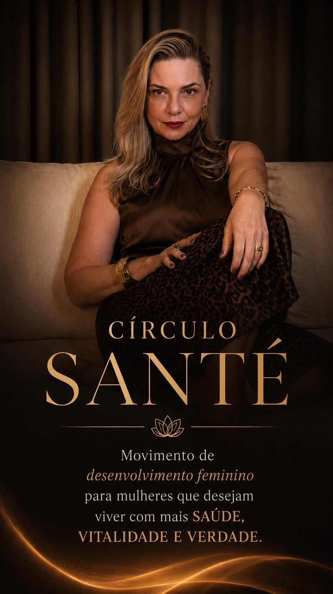
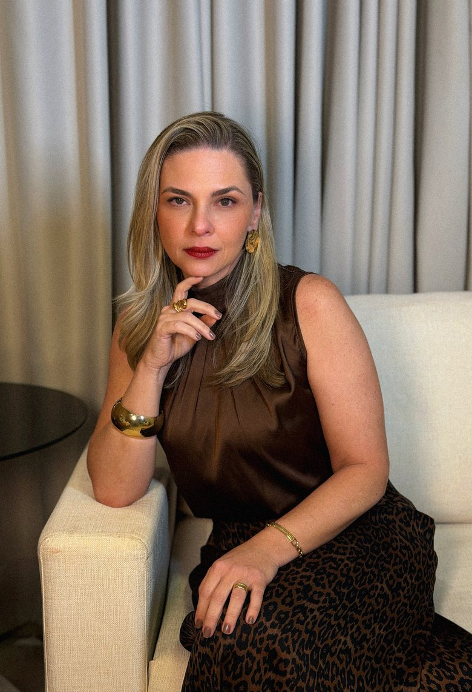

Uma força que nasce
da sua autenticidade.
Nasce quando uma mulher abre espaço para se permitir ser plenamente ela mesma, pois sua sensibilidade, amor e consciência tomam uma força transformadora capaz de nutrir a si, aos outros e ao mundo.
O Círculo Santé nasce
para você se reconhecer
nessa força.
Um movimento contínuo de
desenvolvimento feminino.
Um espaço criado para mulheres que desejam expandir a consciência, fortalecer a identidade e construir uma relação mais profunda consigo mesmas.
Durante essa experiência,
você irá vivenciar
Uma experiência criada para
mulheres que desejam

Juliana Prado
Psicoterapeuta, com 18 anos de experiência na área de desenvolvimento humano e abordagem Analítica Junguiana.
Em 2020, recebeu o chamado para ampliar seu processo de autoconhecimento por meio das Constelações Familiares, que hoje constituem sua filosofia de vida. Em seguida, mergulhou nas práticas de meditações tântricas, nas quais reencontrou seu poder pessoal e sua força vital feminina.
Com toda essa trajetória, Juliana compreendeu que chegou o momento de compartilhar com outras mulheres tudo aquilo que tem nutrido e fortalecido seu lugar no mundo.
As vagas são limitadas, para preservar a qualidade da experiência e a profundidade dos encontros.
Seu nome está no Círculo.
Em breve entraremos em contato pelo seu WhatsApp com os próximos passos.